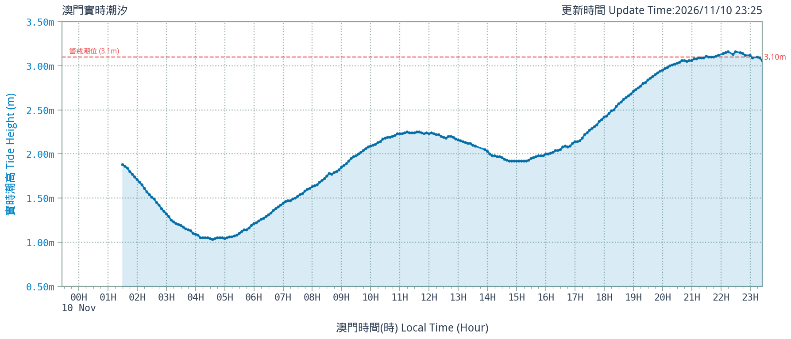
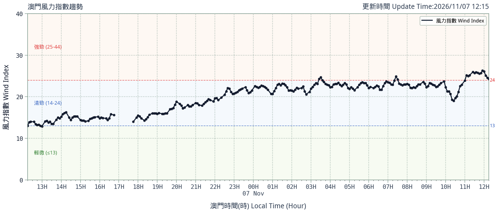
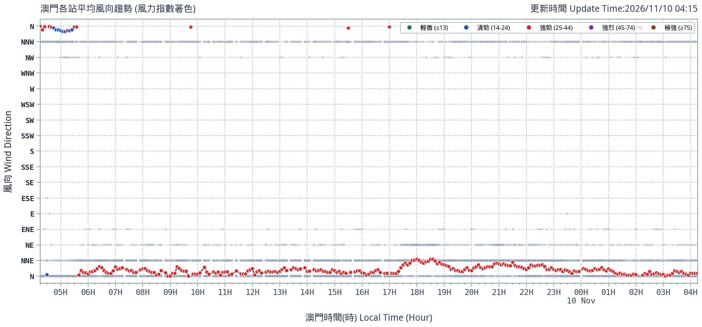
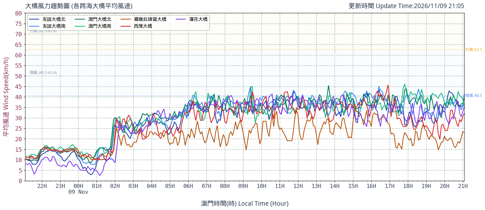
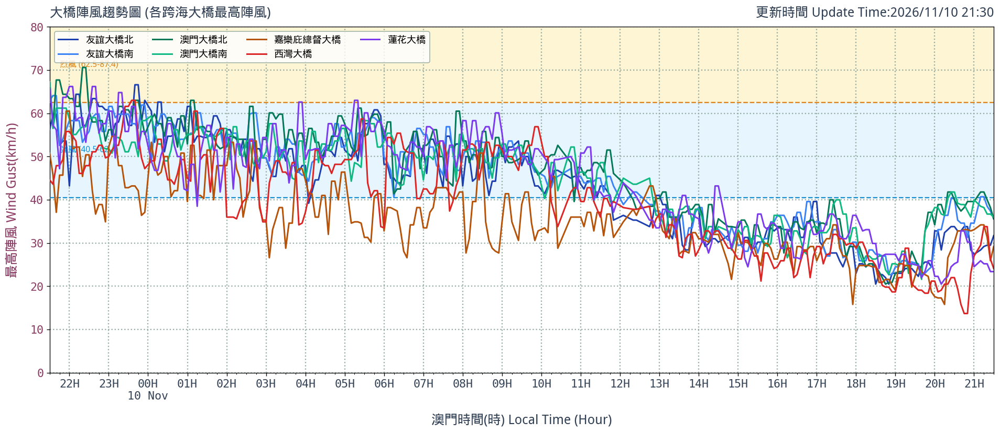

更新：
--
實時氣溫
(°C)
澳門降雨即時監測與歷史查詢 (Rainfall Telemetry)
整合全澳自動氣象站實時雨量、日累積降雨、24小時降雨折線圖庫與降雨歷史記錄動態查詢。
更新：--
全澳最大時雨量
--
mm
測站：--
今日累積最高雨量
--
mm
測站：--
24小時累積最高
--
mm
測站：--
降雨測站覆蓋率
--
/ 10 站
現時降雨中測站
全澳陸地自動氣象站 降雨數據一覽表
降水量單位：毫米 (mm)| 測站名稱 | 代碼 | 分區 | 時雨量 (1h) | 今日總雨量 | 24小時總雨量 | 雨勢狀態 | 折線圖 |
|---|
降雨歷史記錄檢索與趨勢分析
可自訂測站、查詢時段與雨量門檻，自動生成時序趨勢分析與明細數據，並支援匯出 CSV。
降雨歷史趨勢圖 (動態時序分佈)
單位：mm
無符合條件之歷史記錄
| 記錄時間 | 測站名稱 | 代碼 | 降雨量 (mm) | 雨勢分級 | 備註 |
|---|---|---|---|---|---|
| 請點擊上方「執行歷史檢索」載入明細記錄 | |||||
全澳 10 處陸地站點 24 小時降雨量折線圖庫 (點擊圖片全屏放大)
澳門水位監測與實時潮汐 (DSAMA & DSMG)
監控 19 處沿岸及低窪地區水位站實時數據與海事及水務局實時天文潮高（警戒線 3.10m）。
海事及水務局 (DSAMA) 實時潮汐趨勢
更新：--
潮位正常
現時潮高 (Tide Height)
--
米 (m)
折合：-- cm
警戒線基準：3.10 米 (m)

全澳 19 處水位監測站即時狀態表
--| 站點名稱 | 代碼 | 即時水位 (m) | 風暴潮警戒級別 | 記錄時間 | 折線圖 |
|---|
19 處水位站 24 小時時序折線圖庫 (點擊圖片全屏展開)
澳門空氣質素指數 (AQI) 實時監測
整合全澳 6 處主要空氣監測站，依污染物片段式線性內插計算即時副指數與綜合 AQI。
發布時間：--
各站空氣污染物濃度與副指數明細表
μg/m³ (CO: mg/m³)| 監測站 | 代碼 | 綜合 AQI | 首要污染物 | PM10 | PM2.5 | SO2 | NO2 | O3 | CO |
|---|
6 處空氣監測站 24 小時 AQI 趨勢折線圖 (點擊放大)
現時風力指數
--
--
計算中
0.56*陸地加權 + 0.44*大橋加權
陸地平均風速 (U)
--
km/h
10個陸地測站平均
陸地平均陣風 (Ug)
--
km/h
10個陸地測站陣風均值
跨海大橋平均風速 (V)
--
km/h
7處跨海大橋測站均值
跨海大橋平均陣風 (Vg)
--
km/h
7處跨海大橋陣風均值
陸地測站 風速 / 陣風 (點擊測站展示風速折線圖)
10 Stations (km/h)| 測站 | 分區 | 平均風速 | 最高陣風 | 風向 |
|---|
跨海大橋測站 風速 / 陣風 (點擊測站展示風速折線圖)
7 Bridge Stations (km/h)| 大橋測站 | 代號 | 平均風速 | 最高陣風 | 風向 |
|---|
澳門風力指數 24 小時時序圖
點擊放大
澳門風向 24 小時時序分佈圖
點擊放大
跨海大橋平均風速時序圖
點擊放大
跨海大橋最高陣風時序圖
點擊放大
氣象時序折線圖庫 (近 24 小時)
點擊圖表可全屏展開檢視。